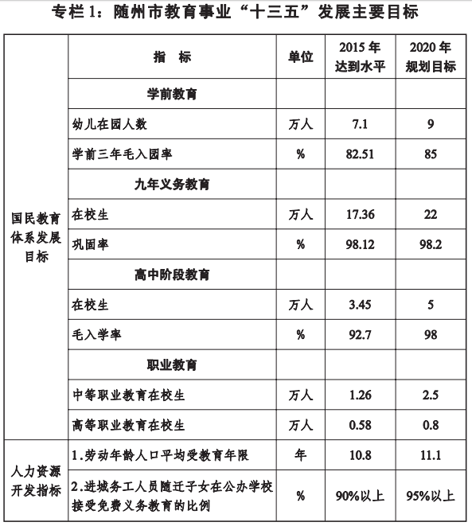
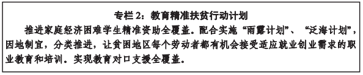
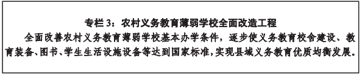
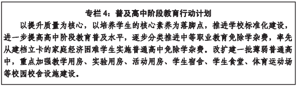
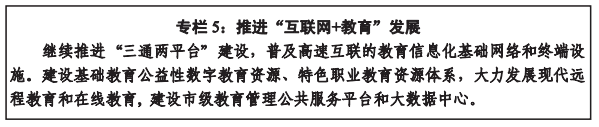

为加快推进随州教育现代化，建设教育强市，根据国家、省、市《中长期教育改革和发展规划纲要》和《随州市国民经济和社会发展第十三个五年规划纲要》，制定本规划。
一、总体目标
到2020年，基本实现教育现代化，我市进入教育强市和人力资源强市行列。
更高水平的普及教育。学前三年毛入园率达到85%，九年义务教育巩固率达到98.2%，高中阶段教育毛入学率达到98%，劳动年龄人口平均受教育年限达到11.1年。
更加丰富的优质教育。省级和市级示范性幼儿园超过全市幼儿园总数的30%，普惠性幼儿园比例达到60%，义务教育学校标准化建设基本完成。不断促进义务教育均衡优质发展，小学综合差异系数小于0.65，初中综合差异系数小于0.55。教育信息化建设达到省内中等水平。
更为满意的公平教育。以政府为主导的家庭经济困难学生资助体系进一步完善，特殊教育体系进一步健全。进城务工人员随迁子女平等接受义务教育权益得到保障。
更具活力的教育体制。完善以公共财政投入为主、多渠道筹措教育经费的投入机制。形成以政府办学为主体、全社会积极参与、公办民办教育共同发展的办学体制。加快现代学校制度建设，健全政府依法管理和学校自主办学的协调机制。
更加健全的终身教育。建立学历教育和非学历教育协调发展、职业教育和普通教育相互沟通、职前教育和职后教育有效衔接的终身教育体系，努力实现学有所教、学有所成、学有所用。
专栏1：随州市教育事业“十三五”发展主要目标

二、主要任务
（一）贯彻创新发展理念，引领教育综合改革
1．推进考试招生制度改革。完善中小学招生办法。坚持义务教育免试就近入学，着力解决城区学校“超规模、大班额”问题。深化中考招生改革，推进初中学历水平考试和初中综合素质评价改革。实行“两考（初中毕业考试、初中升学考试）合一”、全科开考、凡学必考模式，建立“学历考试成绩+综合素质评价”相结合的中考招生制度。继续实行优质普通高中招生名额合理分配到初中学校。顺应高考改革，扎实开展高中学历水平考试和高中综合素质评价。
2．推进人才培养模式改革。坚持立德树人，加强德育工作，培育和践行社会主义核心价值观。建设一批德育精品课程、一批校园文化建设先进学校、一批青少年校外活动基地。加强网络环境下的德育工作。
创新人才培养模式，继续深化素质教育改革。深化中小学课程改革，注重培养学生创新意识、创新精神、创新能力。大力开展“阳光体育”运动，保证学生每天锻炼一小时，不断提高学生体质健康水平。基础教育推进以生本自主、多元评价为导向的素质教育，实施全员育人、全科育人、全程育人，重视加强研究性、实践性学习，探索建立特长生发现培养制度。学前教育以游戏为基本活动。义务教育开展小班化教学。普通高中推行“选课制”“走班制”教学。职业教育深度推进“产教融合，校企合作，工学结合”人才培养模式改革。
改革教学评价制度。完善教育质量监测评估机制。构建以素质教育为导向，以促进学生发展为目标的基础教育质量评估和质量监控体系。建立义务教育质量标准体系、质量保障体系和质量监测机制，整体提升义务教育质量。
3．推进管理体制改革。实现市区（含随州高新区）教育基础设施布局一体化。按照《随州市城乡总体规划（2015―2030年）》，在市区老城区、城东新区、城南新区科学规划教育基础设施布局，推进市区教育布局调整工程，加大市区教育基础设施建设力度。
加大简政放权力度。推行清单管理方式，健全依法、科学、民主决策机制。把公众参与、专家论证、风险评估、合法性审查、集体讨论决定作为重大教育决策法定程序。落实学校办学自主权。以章程为依据，完善学校治理结构，建立依法治校、自主管理、民主监督、社会参与的现代学校制度。创新学校管理理念，适应新高考推动学校内部机构改革和流程再造，推进学校去行政化。
深化教育督导体制机制改革，创新教育督导工作机制，强化教育督导公告、结果公开、限期整改、表彰奖励、约谈问责等工作机制。加强教育评价，深入推进管办评分离，形成督政、督学、评估监测三位一体的教育督导体系。委托社会组织开展教育满意度测评，扩大各类社会组织参与教育评价。
4．推进办学体制改革。完善民办学校管理，积极探索营利性和非营利性民办学校分类管理。在县（市）区域内特别是在农村推进义务教育学校“学区制”“一校制”“联校制”管理模式，推进城乡教育一体化。大力支持民办普通高中发展。引导职业教育办学差异化，鼓励办学主体的多样化。
（二）贯彻协调发展理念，统筹优化教育资源
1．推进学前教育普惠性发展。制定贯彻落实《湖北省学前教育条例》实施细则，建立学前教育经费保障机制。落实幼儿园教职工配备标准，在编制总额内，合理调配、配齐农村公办幼儿园教职工，落实每班“两教一保”要求。严格幼儿园准入制度，落实幼儿园年检和结果公示制度，规范幼儿园办园行为。强化幼儿园安全监管，加强门卫和园内安全管理，确保乘坐校车上下学幼儿安全。研究制定认定和扶持普惠性民办幼儿园实施办法，引导支持民办幼儿园提供普惠性服务。到2020年，全市学前三年教育毛入园率达到85%，公办园和普惠性民办园覆盖率达到60%以上，基本建成“覆盖城乡，布局合理”的学前教育公共服务体系。
2．推进义务教育均衡化发展。建立城乡统一、重在农村的义务教育经费保障机制。实施“全面改薄”工程，加快推进公办学校标准化建设，着力解决“乡村弱”和“城镇挤”问题，各县市区结合实际制定消除大班额专项规划，明确工作任务和时间表、路线图，到2018年基本消除66人以上超大班额，到2020年基本消除56人以上大班额。大力推进义务教育学校校长教师轮岗，实现县域内校长教师交流的制度化、常态化，城镇学校、优质学校每学年教师交流轮岗的比例不低于符合条件教师总数的10%，其中骨干教师交流轮岗应不低于交流总数的20%，基本实现县域校际资源均衡配置。
3．推进普通高中教育优质化发展。加强省市级示范高中建设，实行动态管理，充分发挥示范辐射作用。增加优质普通高中资源总量，全市省级示范高中达到5所，实现县（市、区）优质高中全覆盖。制定公办普通高中生均公用经费财政拨款标准，推进化解普通高中债务，改善薄弱高中办学条件。加快推进高中课程课堂教学改革。制定全市普通高中选课走班实施方案，实行试点先行、分类分步推进，满足学生个性化学习需求。2018年，全市普通高中高考学科全部实行分层分类选课走班。进一步推进普通高中内涵建设，打造优质、特色、多样化发展的高中教育。
4．推进职业教育集团化发展。激发职业教育办学活力。大力推进集团化办学，进一步完善校企共建实训基地制度、学生到企业实习实践制度、订单培养制度、企业技术技能人才从教制度。继续实施“现代职业教育质量提升计划”，着力实施“产教融合工程”。健全区域内“3+2”和五年一贯制中高职一体化人才培养模式，提高“双师型”专业教师比例，到2020年，“双师型”专兼职教师占专业教师总数的60%以上。加强农业类职教师资基地建设，大力支持随州职业技术学院全面建成省示范高职院校，采取合作办学方式，兴建一所普通高等中医专科学校和一所编钟音乐学院。围绕随州专用汽车产业布局和区域经济特点，优化职业教育学科专业结构，积极探索职业院校与企业联合招生、联合培养的现代学徒制度，更好地服务于经济发展和产业结构调整。
5．推进特殊教育完备性发展。建立健全特殊教育公共服务体系，以推进“全纳教育”为目标，积极发展残疾儿童学前教育，大力发展以职业教育为主的残疾人高中阶段教育，加强中小学残疾儿童少年随班就读工作。加强特殊教育条件保障。落实湖北省特殊教育学校建设标准，加强残疾学生学习和生活无障碍设施建设。对特殊教育学校和随班就读残疾学生按每生每年6000元标准预算补助公用经费。提升特殊教育教学质量。将特殊教育在职教师培训纳入教师继续教育培训计划和国家、省级、市级培训计划。制定特殊教育教师编制标准，配足配齐教职工。逐步建立特殊教育质量监测评价体系。
（三）贯彻绿色发展理念，营造良好教育生态
1．坚持依法治教，推进教育法制化进程。积极贯彻落实《依法治教实施纲要（2016―2020年）》，全面加强学生法治教育，切实将法治教育纳入国民教育体系。推动中小学生以多种方式参加法治教育社会实践。加强各级教育普法网络建设，建立青少年法治教育协同创新机制，完善与人大、司法及有关行政部门、社会组织的合作机制，健全青少年法治教育的社会支持网络，加强学校法治副校长、法治辅导员、法治教育志愿者队伍建设，在全市中小学校推行法律顾问制度。深入开展依法治校示范校创建活动。建立教育行政执法责任制，加大综合执法力度，取缔无证办学机构，加大对教育违规行为的查处惩治力度，依法规范学校办学行为和教师从教行为，优化教育行业风气。
2．加强校园周边综合治理，维护教育系统和谐稳定。完善联席会议制度和信息互通平台，强化学校及周边治安综合治理，完善学校矛盾纠纷排查机制和突发事件应急管理机制，有效预防重大安全事故发生和未成年人违法犯罪。加强安保队伍建设，强化校园安全防控设施建设和管理，深入推进平安校园创建活动，确保校园安全稳定大局。
3．打造“绿色校园”，完善后勤服务体系。构建教育后勤服务中心，加大中小学校后勤保障服务监管工作力度，健全和完善学生食堂、宿舍、绿化美化、环境卫生、学校消费市场等方面的管理制度，积极探索学校食堂经营管理改革，推进“放心食堂”建设，督促落实农村寄宿制学校蔬菜基地建设；加强中小学校学生食堂、学生公寓（宿舍）、青少年学生活动场所、文化场所建设，实现食堂、宿舍、学校超市及文明生态校园建设达到省定标准。全面开展“绿色文明校园”、“绿色学校”等创建工作，进一步加强学校风险管理工作，确保努力实现学校硬件建设标准化、配套设施完善化、后勤管理精细化、保障服务人性化的目标。
（四）贯彻开放发展理念，提升教育品牌影响
1．提升随州教科研水平。落实教科研机构的公益性属性，教科研专项科研经费纳入同级财政预算，并建立规范的科研经费拨付、管理、使用制度。坚持“走出去，请进来”，大力开展科研兴教、科研兴校，以科学理论引领教育科学发展。适应教育变革，引进充实人才，加强教育宏观改革、政策研究和热点难点问题对策研究。按照“回归本源、优化管理、促进均衡、提升品质”的指导思想，聚集市内外优秀人才开展全方位、多层次、广渠道研讨，营造浓厚的教科研氛围。
2．传承随州地方文化。围绕“圣地车都”和“炎帝故里、编钟之乡”文化品牌，以建设具有随州地域特色的学校文化为核心，继续推进地方乡土文化教材建设，同时推进“一校一品”，加强校园文化建设，用文化发展战略统领学校发展。
3．扩大教育对外开放。对接“一带一路”、大别山革命老区振兴规划、汉江经济带建设、“两圈一带”等战略，探索建立汉江经济带、大别山地区等教育区域化与地区间协调发展机制，实现市际、省际、区域性教育交流与合作。出台优惠政策，引进国内外优质教育机构来随合作办学（办班），推进对外交流与合作，开展国际夏令营和中学生海外游学活动，全面提升随州教育对外开放水平、综合实力和区域竞争力。
（五）贯彻共享发展理念，全面促进教育公平
1．实施教育精准扶贫工程。以教育精准扶贫为扶贫攻坚的优先任务和教育事业发展的重点工作，以建档立卡贫困家庭学龄人口为主要对象，以建档立卡贫困家庭为延伸，坚持“精准扶贫，教育先行；教育扶贫，育人为本”，完善“政府主导、学校联动、社会参与”扶贫模式，健全学生资助体系，充分发挥教育扶贫的人才、智力、科技、信息优势，提升人力资本素质，提高贫困家庭脱贫能力，遏制贫困代际传递，从根本上消除贫困。

2．加强特殊群体关爱教育。继续完善留守儿童关爱工作机制。健全服务体系，建立工作台帐，重点加强对无人监护和双亲在外留守儿童的关心、照顾和救助。引导社会各界建立关爱机构，进行“生活引导、学业辅导、心理疏导”。
做好进城务工人员随迁子女受教育工作。改革随迁子女就学机制，将随迁子女义务教育纳入城镇发展规划和财政保障范围，逐步实行以居住证为主要依据的随迁子女入学政策，推动“两免一补”资金和生均公用经费基准定额资金随学生流动可携带。落实随迁子女平等待遇。
3．实现教育资源人人共享。坚持以教育信息化带动教育现代化，基本建成人人可享有优质教育资源的信息化学习环境，基本形成学习型社会的信息化支撑服务体系。引导各级各类学校、科研机构、图书馆、博物馆、文化馆、社区等公共资源向全体社会成员开展继续教育。依托市县两级社区教育指导中心，指导开展城乡社区教育。加快构建终身教育体系。以现代信息技术为支撑，聚集优质教育资源，搭建服务全民终身学习的远程教育公共学习平台。
三、重点工程
（一）学前教育公共服务体系建设工程
1．继续实施学前教育“三年行动计划”。规划投资2.34亿元（中央、省专项资金1.85亿元、地方配套资金0.49亿元），新建、改扩建102所幼儿园，形成县、乡、村三级学前教育网络。
2．落实《省人民政府关于进一步推进学前教育改革与发展的意见》（鄂政发〔2011〕27号）精神，统筹做好城市住宅小区配套幼儿园的规划、建设、举办和管理，解决城区幼儿就近入园问题。
3．实施“示范幼儿园”创建工程。至“十三五”末，全市省、市级示范幼儿园达到30%以上。积极盘活学前教育资源存量，鼓励、支持优质园、示范园开办分园、连锁园。
（二）义务教育学校标准化建设工程
1．继续实施农村义务教育薄弱学校改造计划。规划总投资8.35亿元（中央、省专项资金5.9 亿元，地方配套资金2.45 亿元），其中校舍建设56774万元，生活设施建设7457万元，安保设施631万元，教学设备3298万元，教学仪器、体音美器材、信息化15425万元。经过5年时间努力，使全市农村义务教育学校达到标准化要求。
2．统筹规划中小学布局。按照城乡总体规划，合理调整、布局城区义务教育资源，加大老城区中小学改扩建力度，加快城市新区义务教育学校配套建设步伐。适应城市化进程加快、新的学龄人口峰值来临和国家计划生育政策调整的新形势，随州主城区每年增加学位2000个左右，广水市城区、随县城区每年要增加基本满足需求的学位。

（三）普通高中资源扩充工程
推进普及高中阶段教育，实施普通高中建设攻坚计划，涵盖3个县（市、区）6所普通高中学校新建及改扩建校舍和运动场，改善办学条件。到2020年，80%以上普通高中达到省、市级示范学校标准。推动普通高中优质、多样化发展，推动普通高中内涵建设，促进办学体制、内涵特色、培养模式多样化，满足不同潜质学生的发展需求。

（四）现代职业教育体系建设工程
1．推进实施中职学校示范校建设及现代职业教育质量提升工程。坚持政府统筹规划，优化整合资源，提升中职学校整体办学水平。各县（市、区）集中力量办好一所县级职教中心，市级重点建设1―2所有较强影响力的中等职业学校。推进中职学校专业及实训平台建设，建设市技能人才公共实训基地，提升教育教学质量。
2．积极发展高等职业教育。按照“共建、共享、共赢”的原则，创新校企共建生产性实训基地的建设模式，通过“引企入校、引校入企”拓展校企合作育人的途径与方式，促进行业企业参与人才培养的全过程，积极探索教学型实训基地建设模式，建成真实、仿真的项目教室、现场教室等，基本达到合作企业现场生产设备的水平。成立随州职业技术学院职业培训学院，培养一大批适应经济发展方式转变与产业结构优化升级的技术技能人才。充分利用现代教育技术手段开发教育资源、开发培训项目，面向行业企业开展高技能和新技术培训，面向城乡劳动者广泛开展职业培训和职业技能鉴定，力争年培训、鉴定达1万人次。
3．推进职业教育集团建设。以随州职业技术学院、湖北现代教育集团、随州技师学院为龙头，联合、吸引中职学校及各类主体参与，建设职业教育园区，实行校校联合、校企合作、产教融合。通过校企共建，积极培育职业教育优势学科、骨干专业，打造“随州专汽”、“随州制造”、“随州机电”、“随州电子”、“随州化工”、“随州医药”、“随州新能源”、“随州农产品”等专业品牌。
（五）教育信息化建设工程
1．进一步完善教育信息化基础设施建设。建设市级教育云平台和数据中心，推动教育城域网建设。提升学校出口带宽，完善网络教学环境。到2020年，全市中小学和职业学校基本普及数字校园，70%以上中小学校实现校内无线宽带网全覆盖，师生信息化终端设备全面普及，基本建成数字教育资源公共服务体系，师生学习空间全面开通。引导教师应用网络空间开展备课授课、学习指导，鼓励学生应用网络空间开展个性化学习、自主学习和协作学习，倡导学校利用网络空间开展学生综合评价、教学综合分析，提高管理效率，减轻师生负担。
2．深化教育信息化教学应用。依托教育云平台，采用政府购买服务等方式，鼓励有资质的企业、机构开发优质资源、提供优质服务，实现适应学生个性化培养的特色资源库全覆盖，为师生、生生、家校间的学习互动与交流提供支撑。提升学生的信息素养和创新能力，将教师信息技术应用能力与教学培训紧密结合，并纳入教师、校长考核评价体系。
3．提高教育管理水平。发挥互联网、大数据在教育教学管理中的作用，提高教育决策、管理和服务水平，利用信息化实现政府部门、学校、社会广泛连接与互通，推动管、办、评分离，形成科学、高效的教育治理体系。

（六）教师队伍建设工程
1．完善中小学（幼儿园）教师培训、交流制度，推进教师专业化发展。着力培养以“湖北名师”、“随州名师”为主体的中小学（幼儿园）教师专家团队。将教师培训经费列入财政预算，完善教师培训体系，健全省、市、县、校四级培训网络。整合培训资源，分层开展中小学教师全员培训。到2020年，组织培训12万名农村教师和校长，组织320名中小学校长跟岗学习和师范生顶岗实习。组织750名城镇教师到农村支教，推进150名城乡中小学校长双向交流任职。
2．建立保障教师地位和待遇的长效机制。依法落实教师工资、社保、住房保障等待遇，不断改善教师工作、学习和生活条件。完善农村义务教育骨干教师补助制度和乡村教师生活补助制度。健全完善教师激励机制，关注教师心理健康。加强师德师风建设，健全完善师德考评机制，实行学校、教师、学生和社会共同参与的多元评价办法，严格实行师德一票否决。
3．继续实施“2 1 5”名师名校长培养工程。以省、市、县“名师工作室”为依托，采取多元培养方式，培育200名骨干教师、100名学科带头人和50位名校长，在教育教学中起到骨干示范和引领辐射作用。
四、保障措施
（一）强化组织保障，加强对教育工作的领导
各级政府要高度重视教育工作，切实加强对教育工作的领导，优先解决教育问题，优先规划教育发展，优先安排教育投入。健全政府定期研究教育工作制度。进一步加强教育系统领导班子和干部队伍建设。
（二）强化经费保障，加大教育投入
健全以政府投入为主、多渠道筹集教育经费的体制，为建设教育强市提供强有力的经费保障。加大财政经费投入，落实“三个增长”要求，建立教育投入统计公告制度。拓宽经费筹措渠道，足额征收教育费附加和地方教育费附加，其中用于职业教育的比例均不低于30%。加大政府财政基本建设资金、政府土地出让金收入、福彩体彩公益金收益等资金对教育的投入。制定优惠政策，支持引导社会资金投入教育。根据国家办学条件基本标准和教育教学基本需要，逐步建立和完善各级各类教育生均财政拨款机制。
（三）强化监督体系，落实督导制度和监督问责机制
坚持督政与督学并重，监督与指导并重，创新督导评估机制，完善教育督导管理制度。健全教育监测评估体系。完善对政府、部门、学校（幼儿园）“三位一体”，学前教育、基础教育、职业教育、继续教育 “四教统督”，自评与督评相结合的教育督导评价体系。加强教育督导机构和队伍建设。建立市、县（市、区）一统三分的管理模式，完善督学聘用办法，拓宽督学选聘渠道，建立督学委派制度。切实发挥教育督导委员会作用，落实教育督导编制经费保障机制，按《湖北省教育督导规定》的要求落实人员编制，并将教育督导经费纳入财政预算。
五、组织实施
（一）落实责任分工。政府和有关部门要切实履行职责，实行分工负责，分级管理，共同推进规划的实施。市级教育行政部门负责规划的组织协调和实施，各有关部门要积极配合。各地、各级教育管理部门和学校，要结合实际，围绕发展目标、主要任务和重大措施，研究制定本地、本学校的发展规划或实施方案，制定切实可行、操作性强的配套政策措施，抓紧组织实施。
（二）加强监督管理。建立规划实施的中期评估和跟踪监测制度。教育督导和管理部门要切实履行职责，加强督促检查。定期公布各地、各部门重点工作和改革任务的推进、完成情况，适时发布规划实施监测评估报告。
（三）营造良好氛围。各地政府、相关部门和学校要充分发挥传统媒体的主阵地作用和微博、微信、新闻客户端等新媒体的传播优势，广泛宣传党和国家的教育方针、政策和教育工作先进典型、事迹，形成全社会进一步关心教育、重视教育、支持教育氛围，为规划的实施营造良好社会环境。
客户端下载
官方微信